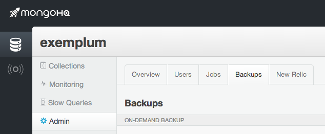

Back up for performance
The best data to test an idea on is real production data with all its quirks but it can be a chore to work with it without interrupting day to day operations. No one runs untested queries against their production databases without running the risk of running interference on their customers experience.
One solution would be to use a complete backup of your database to load up a local database and perform the new queries or complex analytics on that. But sampling from normal backups can only provide you with data that is some hours or days old, depending on your archiving schedule. If you want the freshest data then you really need to be able to take a snapshot of the database at anytime. Workarounds like using an application to sync up an older backup with the current production data aren’t simple and could also be a hit on your production systems performance.
With MongoHQ Elastic Deployments you can make the entire process a lot simpler. That’s because Elastic Deployments have an option to create a backup on-demand that can easily and safely be downloaded to give you the latest version of your database locally. Here’s how to do it…
How to go local
Log into the admin console of your MongoHQ account and select the Elastic Deployment database you want to work with. Then select the Admin tab in the vertical list, followed by the Backups tab in horizontal tabs.
Then click the Back up now button. This will start creating an On-Demand backup. You can have one on-demand backup at a time and they will be kept for seven days – if you ask the MongoHQ system to do another on-demand backup, any current on-demand backup will be overwritten. Once the backup is complete, you can download it. Click on the “arrow down” icon and the filename and size will be displayed along with a download button. Click that button to begin the download of the backup archive.
The downloaded file will be a gzipped tar archive with multiple files within it. Once downloaded, open a terminal and, make a directory for where you want to unpack the backup to…
$ mkdir backupexemplum
Then use tar to extract the contents (in this case the database is called exemplum)…
$ tar xvZfC ~/Downloads/2014-05-05_15-25-56_UTC_exemplum.gz backupexemplum
x exemplum.0
x exemplum.1
x exemplum.2
x exemplum.ns
x raw_parse.txt
$
If you are unfamiliar with tar, the parameters are x (extract), v (verbosely), Z (to uncompress the archive), f (from a named file) and C (change directory to a named directory before extracting).
You are now ready to start a local mongod instance, assuming of course that you’ve got MongoDB installed locally. The mongod command has an option –dbpath to set the directory where it should find its database files and another, –port, to set it listening on a particular port. The latter is worth setting to something other than default, just in case you already have a MongoDB instance installed. Combining these options gives us a command line…
$ mongod --dbpath backupexemplum -port 10240
which will emit a number of informational messages ending with an announcement that it is listening on the specified port. We can now log into the local instance of the database in another terminal session like so…
$ mongo localhost:10240/exemplum
Or use whatever tools we want to work with the safe snapshot of the MongoDB database, whether it be testing out new queries, trying out BI tools, experimenting with data transformations or auditing the data.
How it works
Behind the scenes of Elastic Deployment’s on-demand backup, there is a hidden backup member added to the set of Mongo instances in a deployment. To take a backup, this member is stopped from writing (using db.fsyncLock()) while the underlying files are snapshotted and then unlocked (using db.fsyncUnlock()). The files in the snapshot are then tarred, gzipped and transferred to Amazon S3 ready for downloading.
If you are not using Elastic Deployments, you can implement a similar scheme for your own MongoDB installation. You can also use tools such as mongodump to dump the contents of your database, then tar and gzip the resulting files for downloading and mongorestore them into your local instance. This will give something like the on-demand backup system. Other backup options, like MongoDB’s MMS backup, tend to be scheduled so although you can create a local database copy by restoring from a backup image, it won’t be as up to date as an on-demand version.